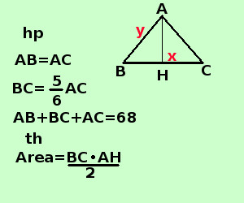

|
sviluppo Risolvere il seguente problema Dato il triangolo isocele ABC, sapendo che la base BC e' i 5/6 del lato AB e che il perimetro vale 68 cm trovarne l'area A destra traccio la figura e scrivo l'ipotesi(hp) e la tesi(th)  Per scrivere l'ipotesi scorro il testo e lo riscrivo in linguaggio geometrico: triangolo isoscele scrivo AB=AC BC e' i 5/6 del lato AB scrivo BC=5/6 AB il perimetro vale 68 scrivo AB+BC+CA=68 Scrivo il perimetro per esteso e ricordo che nel triangolo isoscele i lati obliqui sono uguali La tesi dice che devo trovare l'area, per trovare l'area ho bisogno della base BC e dell'altezza AH Come incognite mi conviene indicare la base ed il lato obliquo, una volta trovati i loro valori, dimezzando la base, mediante il teorema di Pitagora, posso trovare l'altezza del triangolo e calcolare l'area BC = x AC = AB = y " la base BC e' i 5/6 del lato AB" si scrive x = 5/6 y 6x = 5y "il perimetro vale 68 cm" si scrive x + y + y = 68 cm x + 2y= 68 Faccio il sistema
risolvo con il metodo di sostituzione, ricavo x dalla seconda equazione e sostituisco nella prima
BC = 20cm AB = 24cm Se osservi il triangolo, considerando il triangolo AHb esso e' rettangolo e ne conosci 2 lati: se vuoi puoi considerare il triangolo CHB, e' lo stesso procedimento AH = AB/2= 10 cm AB = cm 24 applico il teorema di Pitagora al triangolo ABH AH2 = AB2 - BH2 = 576cm2 - 100cm2 = 476cm2 AH = √476cm2 = 2√119cm chi ha detto che i risultati devono essere sempre numeri interi? ora posso trovare l'area Area = AB·AH/2 = 20cm · 2√119cm/2 = 20√119cm2 L'area vale 20√119cm2 |